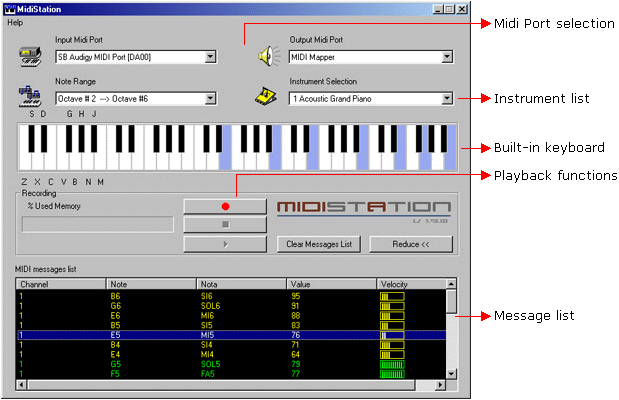
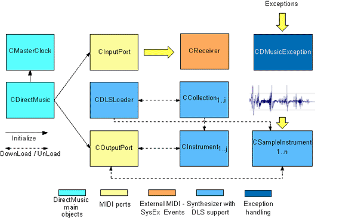
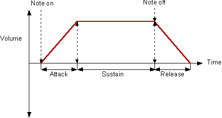
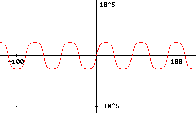

0. Index
1. Introduction
2. What about MIDI?
2.1 What is MIDI?
2.2 The MIDI specification
3. Computers playing music
3.1 DirectMusic and MIDI
3.2 Main DirectMusic COM Interfaces for Win32 MIDI programming
3.3 Developing applications with the DirectMIDI class library
3.3.1 Introduction - DirectMIDI layout
3.3.2 Starting the application
3.3.2.1 First Step: Setting up the development environment
3.3.2.2 Second Step: The first lines of code
3.3.2.3 Third Step: Preparing the music capture
3.3.2.4 Fourth Step: Initializing objects
3.3.2.5 Fifth Step: Starting the music capture
3.3.2.6 Sixth Step: Upgrading the instrument limit
3.3.2.6.1 High level DLS
3.3.2.6.2 Low level DLS
3.3.2.7 Seventh Step: Closing down the application
3.3.3 Exception handling
4. More information
5. The Demo application
6. History
DirectMIDI class library to develop applications based on MIDI.
These commands are based on the MIDI specification and include a common language that provides information about events, such as note-on, note-off, velocity, timing information, System Exclusive (SysEx) and patch change.
MIDI information is transmitted through a MIDI cable that has DIN-type male plug connectors with five pins. Two of the pins are used to transfer digital binary information (MIDI Code). One of the pins issues a steady stream of five volts, while the other pin alternates between 5 volts and 0 volts to represent binary information (on and off). The third pin is a ground and the remaining two pins are currently not in use.
This serial interface was chosen by MIDI manufacturers because it is less expensive than a parallel interface and has longer range. The speed of a MIDI serial interface is 31,250 bits per second. 10 bits are needed for every MIDI digital word, therefore allowing the transmission of 3125 messages per second.
The use of MIDI and the implementation of the specification is available to anyone without restriction, but the official document which describes the complete MIDI specification is copyrighted and not accessible on any WWW site. The specification details all of the approved MIDI messages and uses including General MIDI and Standard MIDI files. At present the MMA keeps specifications for the latest MIDI technlogies such as GM2 (General MIDI 2), DLS2.1(Downloadable Sounds 2.1) and GM Lite for mobile applications.
One of the advantages of the MIDI system is the possibility to use a computer for editing and playing MIDI message sequences. Besides its processing speed and its storage capacity, the computer allows modifying any music parameter with great precision and simplicity.
Since the creation of the MIDI standard, a great variety of commercial programs for musical composition have appeared on almost every platform. The first programs were on 32 bit-based computers like the Amiga, the Atari and also the well known Apple Macintosh.
Nowadays in the PC domain there is a high level of MIDI software development under Windows as well as under Linux.
The applications based on the MIDI interface have also evolved from the simple musical instrument interconnection to the domain of electronic light control, artificial intelligence and educational applications.
The most common problem found when programming a MIDI-based system is the hardware-level access. Fortunately, in Windows-based PCs there are two APIs offered by the operating system which allow accessing hardware ports at the low level. These APIs are the Windows MIDI API and DirectMusic on which this article focuses and which are explained hereby.
DirectMusic, as a part of DirectX, uses the Component Object Model (COM technology). This means that it is object oriented and based on distributed computing. Besides the great advantages of the COM technology like location transparency, binay standard format and runtime polymorphism, the DirectMusic COM objects are composed of interfaces. In the following lines, the most important interfaces involved in a DirectMusic MIDI application are commented:
IDirectMusic8: The IDirectMusic8 interface provides methods for managing buffers, ports, and the master clock. There should not be more than one instance of this interface per application.
IReferenceClock: This standard interface provides access to the master clock which is a kernel-mode hardware timer with a high resolution and is used to synchronize all audio playback in the system.The IReferenceClock::GetTime method returns the current time as a 64-bit integer (defined as the REFERENCE_TIME type) in increments of 100 nanoseconds.
IDirectMusicPort8: The IDirectMusicPort8 interface provides access to a DirectMusicPort object, which represents a device that sends or receives music data, for example the input port of an MPU-401, the output port of an MPU-401 or the Microsoft software synthesizer.
IDirectMusicThru8: This interface allows thruing messages from a capture port to another ports. The IDirectMusicThru8::ThruChannel method is used to establish or break a thruing connection between a channel on a capture port and a channel on another port.
IDirectMusicBuffer8: The IDirectMusicBuffer8 interface represents a buffer containing time recorded data (typically in the form of MIDI messages) to be sequenced by a port. The buffer contains a small amount of data (typically less than 200 milliseconds). The buffer is created with at least 32 bytes for standard MIDI messages.
IDirectMusicLoader8: This interface is used for loading DirectMusic objects such as segments, MIDI files, waves and DLS files. Provides garbage collection.
IDirectMusicCollection8: The IDirectMusicCollection8 interface manages the set of instruments of a DLS file and contains methods to download them to the synthesizer port.
IDirectMusicInstrument8: This interface represents an individual instrument from a DLS collection which is downloaded to the sythesizer using the IDirectMusicPort8::DownloadInstrument
IDirectMusicDownloadedInstrument8: This interface is used to identify an instrument downloaded in the synthesizer. The interface pointer is then used to unload the instrument through a call to IDirectMusicPort8::UnloadInstrument
IDirectMusicPortDownload8: The IDirectMusicPortDownload8 interface enables an application to communicate directly with a port that supports
IDirectMusicDownload8: The IDirectMusicDownload8 interface represents a contiguous memory chunk used for downloading to a
The main kernel of the library is based on its ten related classes which define the different objects involved in a MIDI based application encapsulating the code to realize them.
The next diagram shows the objects created by an application which uses DirectMIDI:

As you can see, there is a main object of the CDirectMusic class type which encapsulates the DirectMusic COM instantiation of a Win32 based application. This object is the responsible to initialize the MIDI port objects which are divided in two categories: input ports for incoming MIDI messages such SysEx data or typical MIDI 1.0 messages and output ports for sending data in SysEx format or MIDI messages. There is an additional object named CMasterClock which provides enumeration and selection of a hardware timer as master clock.
There are another three objects related to the COutputPort object directly and indirectly, this is the case of the CDLSLoader that is the responsible to load DLS files in order to store them into a CCollection object. This object represents a set of instruments in DLS 1.0/2.0 data format and allows extracting its instruments to better containers for them, called CInstruments objects. These are the responsible to keep an instance of a particular instrument for a better handling and organization.
Once we have all the instruments selected from the collections, we can proceed to download or unload them to or from a specific MIDI program in the synthesizer in order to play them.
In addition to the CInstrument object, there is another similar object provided by the DirectMIDI library which allows storing waveform data loaded from a .wav file and programatically generated waveforms. This object, called CSampleInstrument, provides help functions to adjust envelopes, LFO's and regions before downloading to the output port.
Finally, the CDMusicException class handles all exceptions produced in the application and shows a detailed information about the problem which generated the error.
3.3.2 Starting the application
You can initiate the application in many different kinds of projects with your Visual Studio and the DirectMIDI wrapper library, such as MFC's, Win32 standalone and Win32 console applications, but to make it easier I'm going to explain how to build a simple Win32 console application that shows all the characteristics available in the library. Therefore, you must start up your Visual Studio and select a Win32 console application project with the "A simple application" option selected. Once you have created a simple project you need to include all the DirectMIDI headers and .cpp files of the class library in it. To do this, go to Project in the menu bar, select Add to project, Files and then add to your project all the files existing in the DirectMIDI folder related to the MIDI part and subfolders. Therefore, in order to create an application oriented to MIDI we need to include the next necessary header files: CDirectMidi.h, CDirectBase.h and CMidiPart.h and all the .cpp files required when including these headers like the CSegment.cpp. To perform this, in case you have the Visual Studio 7 (.NET) you must select the Project option from the main menu and then click on the Add existing item option to include the class library files.
Now you have all the code necessary in your hands to start programming a new musical application. It's important you have installed the DirectX8/9 SDK's in your computer in order to compile and link your project correctly. If you have it already installed and configured, that's fine for this, if not, go to Tools in the menu bar, select Options and then click on the Directories tab to add the path to the DirectX8/9 headers and library files. If you have the Visual Studio 7 (.NET), go to Tools in the menu bar, click on Options and then open the Projects folder. Expand the Show Directories for combo list and select the library and include files option. Finally, add the header and library files directories to their respective lists.
The compiler should know what external code is going to be used in the current .cpp file of work. For this, you must use the #include directive in order to tell the compiler there is a reference to external code for this project in other files. The required headers are shown in the code below:
// ANSI I/0 headers #include <conio.h> #include <iostream.h> // Math header #include <math.h> // The class library wrapper #include ".\\DirectMidi\\CDirectMidi.h" // Inline library inclusion #pragma comment (lib,"dxguid.lib") // guid definitions #pragma comment (lib,"winmm.lib") #pragma comment (lib,"dsound.lib") #pragma comment (lib,"dxerr9.lib") using namespace std; // Standard C++ library header using namespace directmidi; // the wrapper global namespace // Maximum size for SysEx data in input port const int SYSTEM_EXCLUSIVE_MEM = 48000; // Defines PI const double PI = 3.1415926;
The directive #Pragma comment instructs the linker to create an object file including the required libraries. The last two lines of code above defines the constants that will be necessary in this example project.
You should know that the CInputPort class is the responsible for managing the incoming MIDI events. These MIDI events are captured by a thread which calls two overloaded pure virtual member functions
defined in the CReceiver class depending on the type of data arrived to the port. This two different types of data can be either unstructured MIDI data (System Exclusive) or structured (typical MIDI messages).
In order to override this virtual functions we need to derive a class from CReceiver as shown below:
// Derived class from CReceiver
class CDMReceiver:public CReceiver
{
public:
// Overriden functions
void RecvMidiMsg(REFERENCE_TIME rt,DWORD dwChannel,DWORD dwBytesRead,
BYTE *lpBuffer);
void RecvMidiMsg(REFERENCE_TIME rt,DWORD dwChannel,DWORD dwMsg);
};
Once made this, you can program some code to process these events:
// Overriden function for SysEx data capture
void CDMReceiver::RecvMidiMsg(REFERENCE_TIME lprt,DWORD dwChannel,
DWORD dwBytesRead,BYTE *lpBuffer)
{
DWORD dwBytecount;
// Print the received buffer
for (dwBytecount = 0;dwBytecount < dwBytesRead;dwBytecount++)
{
cout.width(2);
cout.precision(2);
cout.fill('0');
cout << hex << static_cast<int>(lpBuffer[dwBytecount]) << " ";
if ((dwBytecount % 20) == 0) cout << endl;
if (lpBuffer[dwBytecount] == END_SYS_EX)
cout << "\nSystem memory dumped" << endl;
}
}
// Overriden function for structured MIDI data capture
void CDMReceiver::RecvMidiMsg(REFERENCE_TIME lprt,DWORD dwChannel,
DWORD dwMsg)
{
unsigned char Command,Channel,Note,Velocity;
// Extract MIDI parameters from a MIDI message
CInputPort::DecodeMidiMsg(dwMsg,&Command,&Channel,&Note,&Velocity);
if (Command == NOTE_ON) //Channel #0 Note-On
{
cout << "Received on channel " << static_cast<int>(Channel) <<
" Note " << static_cast<int>(Note)
<< " with velocity " << static_cast<int>(Velocity) << endl;
}
}
The first function reads the entire received buffer of SysEx data, prints the values formatted in hexadecimal numeric base and detects when the synthesizer reaches the end of data dump (End of SysEx data). Note that not all the SysEx data is received in an unique call to RecvMidiMsg, multiple consecutive calls can be made to this member function.
The second member function receives a typical MIDI message such as note-on or program-change in a double word format. If you want to parse the message in parts you must use the static function CInputPort::DecodeMidiMsg to extract each MIDI byte.
In this step we declare the main objects that will be used along the application. They are shown below:
int main(int argc, char* argv[])
{
CDirectMusic CDMusic;
CInputPort CInPort;
CDMReceiver Receiver;
COutputPort COutPort;
CDLSLoader CLoader;
CCollection CCollectionA,CCollectionB;
CInstrument CInstrument1,CInstrument2;
CSampleInstrument CSample1,CSample2;
// Continues
The first line declares an object of type CDirectMusic that is the responsible for instancing and initializing DirectMusic and will be the last object to be destroyed. The next one is the CInputPort
that handles input ports. The third one is the CDMReceiver
object which is a CReceiver derived class type and implements the overridden functions seen above. The COutPort object is the responsible for sending data to the device and download instruments to the port. The last
objects manage the downloadable sounds that will be commented in the next step. Now, you are ready to start calling the methods and activating all the MIDI system. See below:
// Initialize DirectMusic
try
{
CDMusic.Initialize();
// Initialize ports given the DirectMusic manager object
COutPort.Initialize(CDMusic);
CInPort.Initialize(CDMusic);
// Continues
The following code activates the input and output ports:
INFOPORT PortInfo;
DWORD dwPortCount = 0;
// Software Synthesizer selection
do
COutPort.GetPortInfo(++dwPortCount,&PortInfo);
while (!(PortInfo.dwFlags & DMUS_PC_SOFTWARESYNTH));
// Output port activation given the port information
COutPort.SetPortParams(0,0,1,SET_REVERB | SET_CHORUS,44100);
COutPort.ActivatePort(&PortInfo);
cout << "Selected output port: " << PortInfo.szPortDescription << endl;
// Input port activation, select the first one (by default)
CInPort.GetPortInfo(1,&PortInfo);
CInPort.ActivatePort(&PortInfo,SYSTEM_EXCLUSIVE_MEM);
cout << "Selected input port: " << PortInfo.szPortDescription << endl;
// Sets up the receiver object
CInPort.SetReceiver(Receiver);
getch();
// Continues
The first lines enumerate all output ports and select the first software synthesizer existing in the system given a number from 1 to COutputPort::GetNumPorts in the first parameter of COutputPort::GetPortInfo. Before calling COutputPort::ActivatePort, it's necessary to call the COutputPort::SetPortParams method to indicate the kind of features we require in the output
port (If zero is passed to this method, the default configuration for that
parameter will be assumed). Then we can call COutputPort::ActivatePort by passing a pointer to an INFOPORT structure to activate the ouput port using the number of channel groups and sample rate parameters passed in the call to COutputPort::SetPortParams. The channel group parameter is the number of MIDI channels groups to be used in the software port, each channel group being a set of 16 MIDI channels.
One of the most important configurable parameters in the COutputPort::SetPortParams method is the sample rate parameter which is the frequency in Hz that we need to stablish for the sound quality in the output port. In this case we use 44100Hz as sample rate.
In the last three lines we select the input port for MIDI capture doing exactly the same, but this time, we don't enumerate any, we limit only to select a default one. Note that there is a second parameter in CInputPort::ActivatePort which indicates the maximum memory size reserved to allocate system exclusive data. In this case we reserve only 46.8 Kilobytes. If you leave this optional parameter, the default value will be 32 bytes, enough space to receive standard MIDI data.
Finally, we establish the receiver object by calling the CInputPort::SetReceiver
method. If you close the main bracket and run the application you will obtain this output:
Capturing musical data from your keyboard is very simple with DirectMIDI as soon as you have initialized the input port. If you decided to reserve space to receive system exclusive data in the call to CInPort::ActivatePort, now your application is ready to handle all the incoming events generated by your keyboard, including standard MIDI data. The next code explains how to activate the capture:
// Activates input MIDI message handling
CInPort.ActivateNotification();
// Redirects messages from source global channel 0 to destination
// global channel 0 over channel group 0 (channels 1-16)
CInPort.SetThru(0,0,0,COutPort);
// Continues
As you can see, the first line of code activates the notification of all the incoming MIDI messages using an event handler that calls its respective virtual member function already overridden in the first part of the application.
The next DirectMIDI feature to comment is the redirection. Using the redirection (MIDI thru) you can pass MIDI messages from a selected input MIDI port to another output MIDI port specifying the channel group, the source and destination global channel where the messages will be redirected.
The next screenshot shows a SysEx data dump and a normal MIDI data capture:

Do you experiment with new sound fonts? If this is your case, this is your lucky day. DirectMIDI supports loading multiple sounds stored in "Downloadable Sounds files" better known as DLS. This technology is the MIDI manufacturer's standard for soundfont format storage in the state-of-the-art multimedia technology. The current DLS2 file format specifies all the instrument definitions: samples, LFO's, low pass filters, loops and envelope generators which will be downloaded and rendered in the synthesizer that supports this feature. DirectMIDI supports two types of DLS operations which are: High level DLS and Low level DLS.
High level DLS is a way to handle waveform instruments that can be stored in DLS 1.0 and 2.0 file formats. They can be created with an application like DirectMusic Producer that allows to configure visually a wide range of parameters previously explained. Low level DLS allows direct downloading of DLS 1.0 data chunks to the port, providing instrument articulations and region parameters from the application program.
Using DLS files within your project is very simple. For this, you must only declare an object of CDLSLoader type in order to load and unload the instrument files. You will also need to declare a CCollection object to store the collections of instruments and a CInstrument object to keep a reference to a particular instrument. The code below shows how to load and unload a set of instruments to the port.
// Initialize the Loader object
CLoader.Initialize();
// Loads the first dls file
CLoader.LoadDLS(".\\Media\\sample.dls",CCollectionA);
// Loads the deafault GM collection of the software synthesizer
CLoader.LoadDLS(NULL,CCollectionB);
// Structure of the instrument information
INSTRUMENTINFO InstInfo;
DWORD dwInstIndex = 0;
// Enumerates instruments in CollectionB
while (CCollectionB.EnumInstrument(dwInstIndex++,&InstInfo) == S_OK)
{
cout << "Instrument name: " << InstInfo.szInstName << endl;
cout << "Patch in collection: " << InstInfo.dwPatchInCollection
<< endl;
cout << "----------------------------------------" << endl;
}
// Gets the instrument with index 214 from the CollectionB
CCollectionB.GetInstrument(CInstrument1,214);
// Assigns it to the MIDI program 0
CInstrument1.SetPatch(0);
cout << "\nSelected instrument: "
<< CInstrument1.m_strInstName << endl;
cout << "Source collection patch "
<< CInstrument1.m_dwPatchInCollection <<
" to destination MIDI program: "
<< CInstrument1.m_dwPatchInMidi << endl;
// Gets the instrument with index 0 from the CollectionA
CCollectionA.GetInstrument(CInstrument2,0);
// Assigns it to the MIDI program 1
CInstrument2.SetPatch(1);
cout << "\nSelected instrument: "
<< CInstrument2.m_strInstName << endl;
cout << "Source collection patch "
<< CInstrument2.m_dwPatchInCollection <<
" to destination MIDI program: "
<< CInstrument2.m_dwPatchInMidi << endl;
// Sets the note range
CInstrument1.SetNoteRange(0,127);
CInstrument2.SetNoteRange(0,127);
// Downloads the instruments to the output ports
COutPort.DownloadInstrument(CInstrument1);
COutPort.DownloadInstrument(CInstrument2);
cout << "\nInstruments downloaded" << endl;
cout << "Playing with the instrument:"
<< CInstrument1.m_strInstName << endl;
cout << "Press a key to play with the second instrument..." << endl;
COutPort.SendMidiMsg(COutputPort::EncodeMidiMsg(PATCH_CHANGE,0,0,0),0);
COutPort.SendMidiMsg(COutputPort::EncodeMidiMsg(NOTE_ON,0,40,127),0);
getch();
COutPort.SendMidiMsg(COutputPort::EncodeMidiMsg(NOTE_OFF,0,40,0),0);
COutPort.SendMidiMsg(COutputPort::EncodeMidiMsg(PATCH_CHANGE,0,1,0),0);
COutPort.SendMidiMsg(COutputPort::EncodeMidiMsg(NOTE_ON,0,60,127),0);
cout << "Playing with the instrument:"
<< CInstrument2.m_strInstName << endl;
cout << "Press a key to exit the application..." << endl;
getch();
COutPort.SendMidiMsg(COutputPort::EncodeMidiMsg(NOTE_OFF,0,60,0),0);
// Continues
The first line of code initializes the loader object which calls the Win32 function CoCreateInstance and instantiates the COM object in the space of the process. Once you have initialized the loader object you can proceed to load the DLS file using the CDLSLoader::LoadDLS member function which takes a null terminated string representing the file name and a reference to a CCollection destination object where the instruments will be loaded. When the given string is null, DirectMidi will load the standard GM/GS set defined in the memory of the synthesizer. To find out which instruments are residing in the CCollection object, you must call the Collection::EnumInstrument function which takes a counter variable indicating the index of the instrument in the collection and a pointer to an INSTRUMENTINFO structure that will receive the information of the instrument i.e. the name and the patch in the collection.
You can obtain a reference to an individual instrument by calling the overloaded member function CCollection::GetInstrument and giving a reference to an instrument object with the index in the collection. This function will fill the internal members of the CInstrument object with the data of the instrument. The CInstrument::SetNoteRange method activates the keyboard region where the instrument must respond when a note-on is produced. Finally, you will have to provide a destination for the instrument in a synthesizer MIDI program, calling the member function COutputPort::DownLoadInstrument and passing the reference to the instrument object. The next screenshot is a sample of the last code output:

DirectMIDI 2.3 enables an application to communicate directly with a port that supports DLS for downloading memory chunks to it. There are two alternatives for downloading data to the port: The first one is to load the waveform from a .wav file that contains the data to playback, and the second one is to generate the waveform in memory using math instructions. In the first case, we need to load the .wav file using the static member function CDLSLoader::LoadWaveFile and providing the next three parameters: A pointer to the string description of the file path, a reference to the destination CSampleInstrument object and a flag indicating the desired access to the file. If the file access flag is the DM_LOAD_FROM_FILE constant, the .wav file is always read from file when required and is useful for huge files. If the flag is the DM_USE_MEMORY constant, the file remains stored in dinamic memory increasing the access speed.
As we said before, the second alternative is to generate a waveform that can be established using the CSampleInstrument::SetWaveForm method, passing a BYTE pointer to the buffer with the data and a WAVEFORMATEX structure containing the format of the waveform (read MSDN for further information). The final destination of the waveform is the CSampleInstrument object which encapsulates the code to perform instrument manipulation. The code below shows these features:
1
2 // Loads the .wav file
3 CDLSLoader::LoadWaveFile(".\\media\\starbreeze.wav",CSample1,
4 DM_USE_MEMORY);
5 // Assigns the patch
6 CSample1.SetPatch(2);
7
8 // Sets a continuous wave loop
9 CSample1.SetLoop(TRUE);
10
11 // Sets additional wave parameters
12 CSample1.SetWaveParams(0,0,68,F_WSMP_NO_TRUNCATION);
13
14 REGION region;
15 ARTICPARAMS articparams;
16
17 // Initializes structures
18 ZeroMemory(®ion,sizeof(REGION));
19 ZeroMemory(&articparams,sizeof(ARTICPARAMS));
20
21
22 // Sets the region parameters
23 region.RangeKey.usHigh = 127;
24 region.RangeKey.usLow = 0;
25 region.RangeVelocity.usHigh = 127;
26
27 // Adjusts LFO
28 articparams.LFO.tcDelay = TimeCents(10.0);
29 articparams.LFO.pcFrequency = PitchCents(5.0);
30
31 // Sets the pitch envelope
32 articparams.PitchEG.tcAttack = TimeCents(0.0);
33 articparams.PitchEG.tcDecay = TimeCents(0.0);
34 articparams.PitchEG.ptSustain = PercentUnits(0.0);
35 articparams.PitchEG.tcRelease = TimeCents(0.0);
36
37
38 // Sets the volume envelope
39 articparams.VolEG.tcAttack = TimeCents(1.275);
40 articparams.VolEG.tcDecay = TimeCents(0.0);
41 articparams.VolEG.ptSustain = PercentUnits(100.0);
42 articparams.VolEG.tcRelease = TimeCents(10.157);
43
44
45 // Sets the instrument parameters
46 CSample1.SetRegion(®ion);
47 CSample1.SetArticulationParams(&articparams);
48
49 // Allocates memory for the download interfaces
50 COutPort.AllocateMemory(CSample1);
51
52 // Downloads the sample instrument to the port
53 COutPort.DownloadInstrument(CSample1);
54 COutPort.SendMidiMsg(COutputPort::EncodeMidiMsg(PATCH_CHANGE,0,2,0),0);
55
56 cout << "Ready to play a wave sample instrument" << endl;
57
58 getch();
59
60
61 // Assigns patch 1
62 CSample2.SetPatch(3);
63
64 // Sets additional wave parameters
65 CSample2.SetWaveParams(0,0,68,F_WSMP_NO_TRUNCATION);
66
67 // Sets the instrument parameters
68 CSample2.SetLoop(TRUE);
69 CSample2.SetRegion(®ion);
70 CSample2.SetArticulationParams(&articparams);
71
72 // Generates the waveform data
73 // Samples per second
74 DWORD nSamplesPerSec = 44100;
75
76 double nTimeSec = 1.5; // Time duration of the sample
77
78 // Number of samples
79 DWORD nSamples = static_cast<DWORD>(nTimeSec * nSamplesPerSec);
80
81 // Digital frequency of the waveform
82 double Frequency = 1000.0/nSamplesPerSec;
83
84 // Allocates memory for the waveform
85 BYTE *pRawData = new BYTE[nSamples*2];
86
87 // Generates the waveform
88 for(DWORD ni = 0;ni < nSamples*2;ni+=2)
89 {
90 WORD wData = static_cast<WORD>(30000*sin(2.0*PI*Frequency*ni) +
91 5000*sin(6.0*PI*Frequency*ni) +
92 1000*sin(10.0*PI*Frequency*ni));
93 pRawData[ni] = static_cast<BYTE>(wData & 0xFF);
94 pRawData[ni+1] = static_cast<BYTE>((wData & 0xFF00)>>8);
95
96 }
97
98 // Format of the waveform
99 WAVEFORMATEX wfex = {WAVE_FORMAT_PCM,1,44100,44100,2,16,0};
100
101 // Sets the waveform into the sample object
102 CSample2.SetWaveForm(pRawData,&wfex,nSamples*2);
103
104 // Allocates interface memory
105 COutPort.AllocateMemory(CSample2);
106
107 //Downloads the instrument to the port
108 COutPort.DownloadInstrument(CSample2);
109
110 COutPort.SendMidiMsg(COutputPort::EncodeMidiMsg(PATCH_CHANGE,0,3,0),0);
In the first lines of the code above we load the .wav file, calling the CDLSLoader::LoadWaveFile static member function and storing the sample in memory.
The first important operation of the download protocol is to assign a MIDI program (patch number) to that sample instrument before downloading it. Thus, we have the CSampleInstrument::SetPatch method (6th line) for this pourpose.
After assigning the patch number, we can choose if we want to loop the sample by using the CSampleInstrument::SetLoop method (9th) and specifying whether we need a continuosly playing sample or a sample which is normally forward played. After setting this parameter we can proceed to adjust additional wave playback parameters like the Key note (MIDI unity playback note) and other ones like attenuation and fine tune (see DirectMIDI online documentation). To perform this we must use the CSampleInstrument::SetWaveParams method (12th).
The next essential parameters for a correct sample download are the regions and the articulations (without setting these parameters the sample will not sound). In the REGION structure we establish the keyboard zone where the instrument must respond to a note-on. For this, we must initialize to zero the structure and then fill its members with the corresponding MIDI ranges (see 23-25th lines). It's important to do the same with the ARTICPARAMS structure (see DirectMIDI online documentation). This structure contains a set of members that adjust important parameters like LFO, volume envelope (VolEg) and pitch envelope (PitchEg) (28-42th). The DirectMIDI library provides a group of help functions to fill in the member values of the ARTICPARAMS structure. For instance, we have the directmidi::TimeCents function which converts "seconds" to the suitable input format (time cents). Next, call to CSampleInstrument::SetRegion and CSampleInstrument::SetArticulationParams to establish these parameters (46 and 47th).
Finally, you can proceed to download the sample instrument to the output port by using COutputPort::DownloadInstrument, but first you must allocate memory for the internal DirectMusic interfaces which will perform all this, calling to the CSampleInstrument::AllocateMemory method with a reference to the sample object (52th-55th).
Finally, in the 99th line we fill the members of the WAVEFORMATEX structure before calling the CSampleInstrument::SetWaveForm method which will indicate the CSampleInstrument object where the raw-data buffer is allocated (102th).
For the rest of the code, the parameter setting and downloading operations are similar to those commented in the first part of this section.
 |
| Starbreeze.wav volume envelope graph |
 |
The generated waveform graph.
The seventh and last step is to finish the application in a suitable way. To do this, you must call the next member functions before ending your application:
// Breaks the redirection
CInPort.BreakThru(0,0,0);
// Ends the notification
CInPort.TerminateNotification();
// Unloads the collections from the loader
CLoader.UnloadCollection(CCollectionA);
CLoader.UnloadCollection(CCollectionB);
// Unloads the instruments from the port
COutPort.UnloadInstrument(CInstrument1);
COutPort.UnloadInstrument(CInstrument2);
// Unloads the sample instruments
COutPort.UnloadInstrument(CSample1);
COutPort.UnloadInstrument(CSample2);
// Frees allocated memory
COutPort.DeallocateMemory(CSample1);
COutPort.DeallocateMemory(CSample2);
// Disposes the memory
delete [] pRawData;
// Exit
}
catch (CDMusicException& DMEx)
{
cout << DMEx.GetErrorDescription() << endl;
}
return 0;
}
If you activated the notification in the input MIDI port object for receiving incoming MIDI events, it is your responsibility to call now CInputPort::TerminateNotification to finish the message handling and tell DirectMusic not to signal any more events. You must also call CInputPort::BreakThru, if you established a thru connection between ports. Also, it is important to unload the collections from memory once they are no longer needed, calling CDLSLoader::UnloadCollection and releasing the internal DirectMusic interfaces calling COutputPort::DeallocateMemory method. The same as the instruments from the synthesizer memory calling the
COutputPort::UnloadInstrument methods.
Although DirectMIDI will free the memory for you in case you forget it, it's a good idea to do it by yourself.
A few readers have reported me about their problems preventing error propagation and avoiding exception situations. I studied the problem and came up with the solution. To solve this, I added a new class to the DirectMIDI scheme for exception handling. This new class called CDMusicException handles all the posible errors and failures produced by an application that uses the library, forgetting the old and tedious use of the FAILED macro.
Basically the object provides three important properties to inform about the error, these are: m_hrCode that informs about the DirectX COM HRESULT code obtained in the DirectMusic interface call, m_strMethod, that gives the method description where the function call failed and m_nLine that returns the line of the module source code where the error was generated.
Besides these three properties, there is an additional method to facilitate the error description. This is obtained by calling CDMusicException::GetErrorDescription() which returns a LPCTSTR string containing a detailed error description when the exception has been caught. You can see an example in the image below:

If you are looking for information about DirectMusic, you will be able to find it in the DirectX 8/9 SDK documentation offered with the MSDN library at the DirectX home page. If you are looking for more detailed information about DirectMIDI wrapper library, you will be able to obtain it in the on-line DirectMIDI developer's reference in the SourceForge project homepage and in the sources available for downloading in this article.
The demo application called MidiStation v1.9 is an easy-to-use program that shows all the features of the DirectMIDI wrapper class. You can change parameters like the MIDI port for output, select any GM instrument, change octaves, record your compositions and preview all notes and messages from an external keyboard or even play with the built-in MIDI keyboard. Enjoy the MIDI!
| MidiStation features | DirectMidi changes |
|
MidiStation 1.8.4 features:
MidiStation 1.9.0 features:
MidiStation 1.9.1 features:
MidiStation 1.9.2 features:
|
DirectMIDI 2.2b changes:
DirectMIDI 2.3b changes:
|